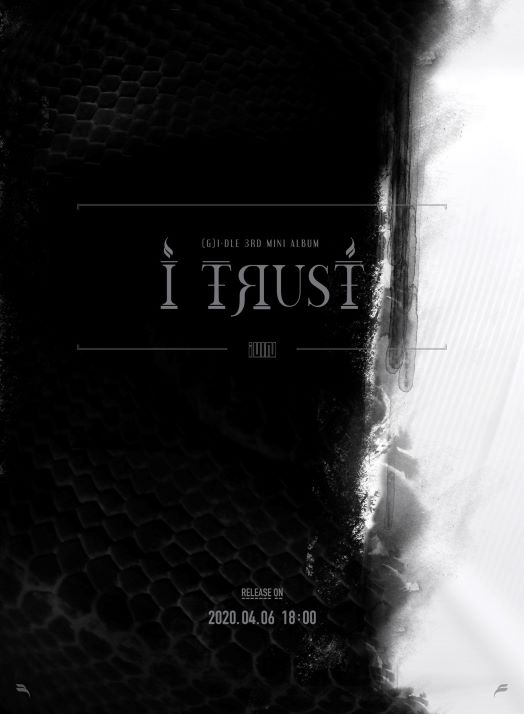

(G)I-DLE's History
Description
- (G)I-DLE is a South Korean multinational girl group consisting of 6 members, formed by Cube Entertainment in 2018.
- The group debuted on 2 May 2018 with their title track LATATA.
- (G)I-DLE subsequently participated in a reality girl group survival show created by Mnet, Queendom. In the first preliminary round, (G)I-DLE finished first place after performing "Latata" reimagined with a concept of shamanism.
-
They have currently released 3 albums:
- I Am
- I Made
- I Trust
- Considering that they are quite new to the industry, they are actually professional as they perform on stage with huge presence and charisma. They are also often called "Monster Rookies".
- Their newest EP, I Trust, became the group's best-selling album and the second-highest first day sales by a girl group at that time with total sales of 91,311 physical copies.
- It debuted atop both Gaon Album Chart and the Retail chart, moving more than 100,000 copies and scores their highest debut on Billboard World Albums chart.
- For more details about them, click here.
Album Details
| Release Date | Album Cover | Album Title | Track List |
|---|---|---|---|
| 2 May 2018 |  |
I Am |
|
| 26 February 2019 |  |
I Made |
|
| 6 April 2020 |  | I Trust |
|